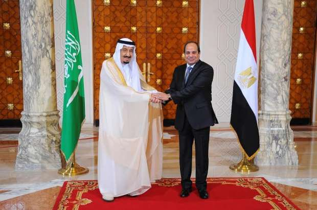
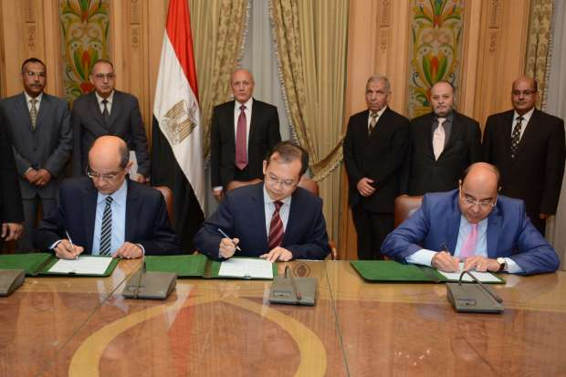

أحدث الأخبار
- الخارجية: مصر تعزي إثيوبيا في ضحايا حادث الإنهيار الأرضي
- الموازنة الجديدة وحل اتحاد الكرة واحتياطي القمح.. أبرز العناوين
- الزمالك يكتسح رينجرز النيجيري بأربعة أهداف مقابل هدف وحيد
- القضاء الإداري يقضي بحل اتحاد الكرة وبطلان الانتخابات الأخيرة
- مقتل 3 أشخاص وإصابة 3 آخرين في حادث مروري بالبحيرة
- وزير الخارجية يجري اتصالاً مع رئيس المجلس الرئاسي الليبي
- عاصمة مصر تتجه لزيادة سكانية نصف مليون العام الجاري
- باولو يقود هجوم الزمالك أمام رينجرز في دوري الأبطال
علاقات مصر الاقتصادية في 2016.. بين اختلاف المصالح والتقائها
الرئيس المصري عبد الفتاح السيسي ونظيره الروسي فلاديمير بوتين، فبراير 2015 - صورة من رويترز
لعبت العلاقات الاقتصادية الخارجية دورا رئيسيا في صنع السياسة المصرية خلال 2016، وأصبحت في نهايته اللاعب الأول في المشهد، بعد أن اتخذت مصر سلسلة من الإجراءات التي تمس حياة المواطن، في إطار برنامج اقتصادي وافقت عليه المؤسسات المالية العالمية، لتسهيل حصولها على مجموعة من القروض الدولية.
أصوات مصرية تستعرض أهم تطورات العلاقات الاقتصادية مع شركاء مصر الدوليين، الذين اعتمدت عليهم الدولة خلال العام في تدشين مشروعات والحصول على تسهيلات مالية، يفترض أن تساهم في تخفيف الأزمة الاقتصادية التي تعانيها البلاد.
روسيا: المصالح تتصالح.. لكن السياحة لا تعود
كان 2015 عاما ممتازا للعلاقات المصرية الروسية في كافة المجالات، ولكن نهايته كانت مأساوية، بعملية إرهابية تسببت في إسقاط طائرة روسية، ومقتل كل من كانوا على متنها، وعددهم 224 شخصا معظمهم سائحون روس.
كانت القاهرة وموسكو قد وقعتا في 2015 عقد إقامة المحطة النووية في الضبعة بقرض روسي، بالإضافة للتقارب في الرؤى حول الملف السوري، والاتفاق على إنشاء المنطقة الصناعية الروسية بمنطقة شرق بورسعيد، واستمرار استحواذ روسيا على جانب كبير في كل من صفقات السلاح وواردات القمح المصرية، والوفود السياحية القادمة إلى مصر.
في نهاية فبراير الماضي، قال الرئيس المصري عبد الفتاح السيسي إن من أسقط الطائرة الروسية كان يقصد ضرب علاقات مصر مع روسيا، فهل استطاع الجانب المصري حماية العلاقات من هذه الضربة؟
كانت أزمة "أرجوت القمح"، المثال الأوضح على كيفية مراعاة الدولتين لمصلحتهما الخاصة، ففي سبتمبر الماضي رفض مفتشو الحجر المصريون شحن قمح روسى لمصر، بسبب مشاكل تتعلق بفطر الإرجوت.
حدث هذا بسبب تبني مصر سياسة عدم السماح بأى نسبة من الإصابة بفطر الإرجوت الشائع فى الحبوب فى نهاية أغسطس، ما سبب اضطرابا في السوق العالمي للقمح، خاصة أن مصر هي المستورد له الأكبر في العالم، في الوقت الذي كانت روسيا تحصد فيه أضخم محصول قمح لها منذ انهيار الاتحاد السوفيتي.
وكانت مصر تستورد قبل قرار "أغسطس" وفقا لقواعد تسمح بنسبة إرجوت لا تزيد على 0.05 بالمئة، وهو المعيار العالمي الشائع، واشترت الهيئة المصرية العامة للسلع التموينية وفقا لهذا المعيار 540 ألف طن من القمح الروسي في يوليو وأغسطس 2016، مقابل 6 ملايين طن في السنة التسويقية السابقة، التي انتهت في 30 يونيو، والتي كانت توازي ربع إجمالي صادرات موسكو، ثم توقف الاستيراد تماما بعد حظر الإرجوت.
وكان الرد الروسي على تغيير القواعد المصرية، بحظر استيراد الموالح والخضروات المصرية، حيث قالت هيئة سلامة الغذاء الروسية إن لديها بواعث قلق من "مخالفات ممنهجة للمتطلبات الدولية والمتعلقة بالصحة النباتية.. في الإمدادات الضخمة من الموالح المصرية المصدرة إلى روسيا".
واستوردت موسكو خضروات وفاكهة من مصر بنحو 350 مليون دولار مما يجعلها من أكبر عملاء القاهرة.
وقبل نهاية سبتمبر "شهر الأزمة"، كان الجانبان قد اقتنعا بضرورة عودة العلاقات التجارية إلى ما كانت عليه، حيث أعلنت روسيا استئناف واردات الخضروات والفاكهة المصرية، بعد إلغاء مصر حظر واردات القمح التي تحتوي على نسب من فطر الإرجوت في الحدود المسموح بها دوليا.
ولكن النهاية السعيدة لم تتكرر في باقي الملفات الاقتصادية بين البلدين.
فخلال عام 2016 لم يتم تحويل مذكرة التفاهم الخاصة بإنشاء المنطقة الصناعية إلى اتفاق، وتوقفت المباحثات حتى مطلع ديسمبر الماضي، حينما أعلن الجانب المصري عن توسيع المساحة المخصصة لإقامة المنطقة الصناعية الروسية من مليوني متر مربع إلى 4 ملايين متر مربع، باستثمارات تبلغ 4.6 مليار دولار بحلول عام 2035، ولكن حتى الآن لم يتم التوقيع.
وخلال عام كامل لم تلغ روسيا قرارها بحظر سفر مواطنيها إلى مصر، رغم الجهود المصرية لتأمين المطارات.
ورغم تأكيدات شريف فتحي، وزير الطيران المدني، وسامح شكري، وزير الخارجية في نوفمبر الماضي، على أن التأمين داخل المطارات المصرية وصل إلى أعلى الدرجات العالمية، وأن هناك تدريبًا مستمرًا للعاملين لتحسين مستوى أداء الخدمة، وأن مصر أوفت بكل ما هو مطلوب من أجل تأمين مطاراتها واستعادة ثقة العالم فيها، ولكن قرار إلغاء حظر السفر الروسي لم يصدر.
وكان وزير السياحة السابق هشام زعزوع قدر خسائر مصر بحوالي (281 مليون دولار) شهريا جراء قرار كل من بريطانيا وروسيا تعليق الرحلات الجوية لشرم الشيخ، حيث يشكل السياح الروس والبريطانيون ثلثي حركة السياحة في المدينة، بينما يمثل الروس وحدهم نصف السياح في مدينة الغردقة.
بينما في نفس العام، في سبتمبر 2016، استأنفت روسيا رحلاتها السياحية إلى تركيا، بعد انقطاع دام تسعة أشهر فقط، نتج عن إسقاط مقاتلات تركية لطائرة روسية أواخر 2015.
كما أعلنت تركيا إنها ستتخذ خطوات جادة نحو التعامل التجاري بالعملات المحلية مع روسيا "الليرة التركية والروبل الروسي"، وذلك خلال زيارة رئيس الوزراء التركي إلى موسكو مطلع ديسمبر الحالي، بغرض دعم عملتي الدولتين.
يحدث هذا رغم اختلاف وجهتي النظر التركية والروسية فيما يخص النزاع السوري، على عكس الوضع مع القيادة المصرية، التي أعلنت دعمها للجيش النظامي السوري المدعوم من روسيا، كما وافقت على مشروع قرار روسي في مجلس الأمن بخصوص سوريا، ولكن هذا التوافق السياسي لم يجلب السياح الروس حتى الآن.

الرئيس عبد الفتاح السيسي خلال استقباله خادم الحرمين الشريفين الملك سلمان بن عبد العزيز - أبريل 2016 - صورة من رئاسة الجمهورية.
السعودية: اقتراب وابتعاد
في نهاية العام الماضي وخلال النصف الأول من العام الحالي، كانت العلاقات الاقتصادية المصرية السعودية قد وصلت إلى قمتها، بعد دعم سعودي كبير ومستمر منذ منتصف 2013، هذا بالإضافة إلى كون السعودية ثاني أكبر المستثمرين في مصر، وأكبر مستقبل للعمالة المصرية بالخارج.
في 2016 أعلنت المملكة العربية السعودية عن تقديم مساعدات سخية للجانب المصري، تنوعت بين تأمين احتياجات مصر النفطية لمدة 5 سنوات عبر تسهيلات ائتمانية، إلى جانب رفع حجم الاستثمارات السعودية في مصر إلى 30 مليار ريال، إضافة إلى دعم حركة النقل في قناة السويس من قبل السفن السعودية، وترسيم الحدود البحرية بين الدولتين، ما تسبب في أزمة "جزيرتي تيران وصنافير".
كما تم توقيع اتفاقية لحصول مصر على قروض ومساعدات بقيمة تزيد على3.2 مليار دولار، لتنمية شبه جزيرة سيناء، وتمويل شراء منتجات وسلع سعودية.
وتم الاتفاق على إنشاء صندوق سعودي مصري للاستثمار برأسمال 60 مليار ريال، بين صندوق الاستثمارات العامة السعودي والحكومة المصرية، بالإضافة لإنشاء منطقة اقتصادية حرة في شبه جزيرة سيناء، إلى جانب عدد من الاتفاقيات الأخرى.
ومنذ إعلان هذه الاتفاقيات بدأ النزاع القانوني والشعبي ضد التنازل عن جزيرتي تيران وصنافير للمملكة العربية السعودية، إلا أن العلاقات الثنائية لم تشهد تدهورا، خاصة مع وقوف الحكومة المصرية إلى جانب اتفاقية ترسيم الحدود ضد الدعاوي القانونية التي أقامها عدد من النشطاء والمحامين الرافضين لهذه الاتفاقية.
وفي سبتمبر صرح رئيس الوزراء شريف إسماعيل بأن مصر تسلمت ملياري دولار وديعة من السعودية.
ولكن في أكتوبر الماضي، تغير الموقف، حيث أعلنت وزارة البترول المصرية توقف شركة أرامكو السعودية عن توريد المشتقات النفطية المتفق عليها، تزامنا مع تصويت مصر لصالح مشروع القرار الروسي في مجلس الأمن الدولي بشأن الأزمة السورية، ما اعتبرته السعودية "غير مُعبر عن الموقف العربي".
ورغم أن السعودية تستهدف السيطرة على توزيع النفط في أكبر رقعة ممكنة من العالم، إلا إنها ضحت بالاتفاق المصري، الذي كان يضمن استهلاك 700 ألف طن من مشتقات البترول شهريا، بقيمة 23 ملياردولار على مدار 5 سنوات، ما يرجح أن القرار ليس له دافع اقتصادي.
وحتى الآن لم يتم الإعلان عن عودة ضخ بترول المملكة، بينما اتجهت مصر لتلبية احتياجاتها من موردين أخرين، أهمهم الكويت.
وعلى الرغم من تعطل اتفاقيتي ترسيم الحدود، ومشتقات البترول، إلا أن الأوضاع لم تكن سيئة على كافة الأصعدة، ففي منتصف أكتوبر وقّع الفريق مُهاب مميش رئيس هيئة قناة السويس والأمير وليد بن سعود بن مساعد بن عبد العزيز،عقد شراكة بين هيئة قناة السويس ومؤسسة الخبرات الدولية السعودية، لتأسيس شركة مساهمة لبناء مصنع للحديد والصلب بالعين السخنة بمنطقة شمال غرب خليج السويس، بطاقة إنتاجية 1.2 مليون طن سنويا، برأسمال 500 مليون دولار واستثمارات تصل إلى مليار دولار.
عام توسع النفوذ الصيني
في 2014 أسست الصين البنك الآسيوي للاستثمار في البنية التحتية، كبديل للبنك الدولي، وكانت مصر الدولة الأفريقية الوحيدة ضمن 35 دولة مؤسسة للبنك، وفي 2016 استضافت الصين قمة مجموعة العشرين الكبار، ودعت مصر، كضيف شرف للمؤتمر، هذا فضلا عن الزيارات المتبادلة بين الرئيسين، ولكن العلاقات بين البلدين لم تتوقف فقط على المستوى البروتوكولي.
في 2016، ومع دخول اليوان الصيني إلى سلة العملات العالمية، توصلت الدولتان لاتفاق مبادلة عملة بقيمة 2,7 مليار دولار، ما دعم الاحتياطي النقدي لمصر، ومكنها من الحصول على الموافقة النهائية على قرض بقيمة 12 مليار دولار من صندوق النقد.
وكان صندوق النقد الدولي قد اشترط على مصر تدبير ستة مليارات دولار بشكل ثنائي مع الدول الصديقة، حتى يسمح بإحالة اتفاقية القرض إلى مجلس الصندوق للتصديق عليه.
وتستفيد الصين من اتفاق مبادلة العملة أيضا، حيث سيتم تمويل صادراتها إلى مصر باليوان، كما ستستفيد من الجنيه في تنفيذ استثماراتها في مصر.
و2,7 مليار دولار، هي نفس قيمة تكلفة استثمارات "الشركة الصينية لهندسة الإنشاءات" التابعة للدولة، في المرحلة الأولى من أعمالها في العاصمة الإدارية الجديدة، خلال الثلاث سنوات القادمة.
هذا بالإضافة إلى 18 مشروعا تدرس الصين تمويل تنفيذها في مصر في مجالات الكهرباء والصناعة والنقل، وفقا لاتفاق وُقع في منتصف 2016، بين الحكومتين.
وتتوسع الصين في توجيه استثماراتها للأسواق الناشئة، ومنها مصر، حيث قامت بالاستثمار حتى في أوقات اضطراب سوق العملة، ونافست دول الخليج في دعم احتياطي النقد الأجنبي لدى المركزي المصري.

توقيع اتفاقية بين وزارة الإنتاج الحربي وشركة الصينية-23-8-2016- صورة من وزارة الإنتاج الحربي
الاخبار المتعلقة


{kind=link}
تعليقات الفيسبوك